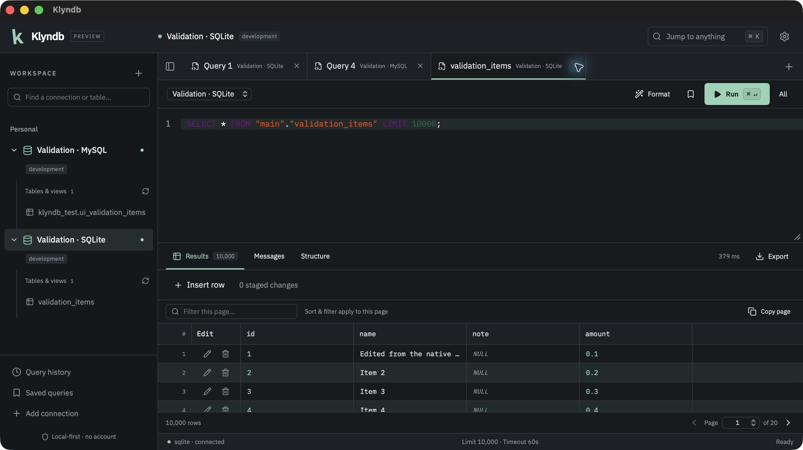

Stay in the SQL flow
Multiple tabs, syntax highlighting, dialect formatting, schema completion and statement, selection or batch execution.
FREE. OPEN SOURCE. LOCAL-FIRST.
A modern alternative to DBeaver, built with Rust and Tauri. Write SQL, explore tables and edit data in a workspace that stays on your machine.
MIT licensed · macOS Apple Silicon preview · Ad-hoc signed

Captured from the packaged macOS app. Real database queries, synthetic test data.
Captioned screenshot walkthrough. SQL, MongoDB, Redis and Settings: actual native macOS captures. Data scenes use synthetic records and real database requests. Keyboard shortcuts and SQL confirmation controls are shown in the current source build. Edited screenshots; source debug-app scenes do not establish acceptance of updated public packages.
NINE DATABASES. ONE WORKSPACE.
Downloadable Preview 2 includes all nine engines. Exact-package native checks cover selected workflows; broader feature and platform checks remain on the roadmap. Read the DuckDB, ClickHouse, SQL Server, Redis and MongoDB guides. More drivers are on the compatibility roadmap ↗.
02 / YOUR EVERYDAY WORKFLOW
The tools you reach for every day, together in one focused desktop client.
Multiple tabs, syntax highlighting, dialect formatting, schema completion and statement, selection or batch execution.
Streamed results, a virtualized grid, server-side table filters, sorting and pages, plus column layout and cell inspection.
Stage inserts, updates and deletes. Review a batch, track your transaction and see conflicts before overwriting changes.
Import CSV/JSON with preview and column mapping, or execute reviewed SQL files. Export CSV, JSON, JSONL, SQL INSERT or Markdown through native dialogs.
Explore native execution plans in a collapsible tree, inspect raw output and run confirmed runtime analysis where supported.
Saved connections and queries, history, restored tabs, saved relationship diagrams, dark and light themes, keyboard shortcuts and a command palette.
03 / NATIVE WHERE IT COUNTS
Connections, queries, cancellation and files run in Rust. React handles the interface. Your system WebView supplies the desktop view.
04 / MAKE IT YOURS
Download Preview 2 for macOS Apple Silicon, including the DMG, app ZIP and checksums. To build from source, you’ll need Rust stable, Node.js 22.12+ and the Tauri platform prerequisites.
Ad-hoc signed; not notarized. macOS may prevent opening the preview. Native acceptance covers SQLite and selected workflows on seven additional engines on macOS 26.6 arm64. MariaDB native acceptance remains pending. Windows/Linux and Intel Mac packages remain pending.
Open the quickstart →git clone https://github.com/OthmaneBlial/klyndb.git
cd klyndb/apps/desktop
npm ci
npm run tauri devThen connect to a development database and run your first SQL statement.
OPEN SOURCE GETS BETTER TOGETHER
Try the preview. Share the workflow you’re missing. Contribute a fix.
A star helps the next developer discover Klyndb.